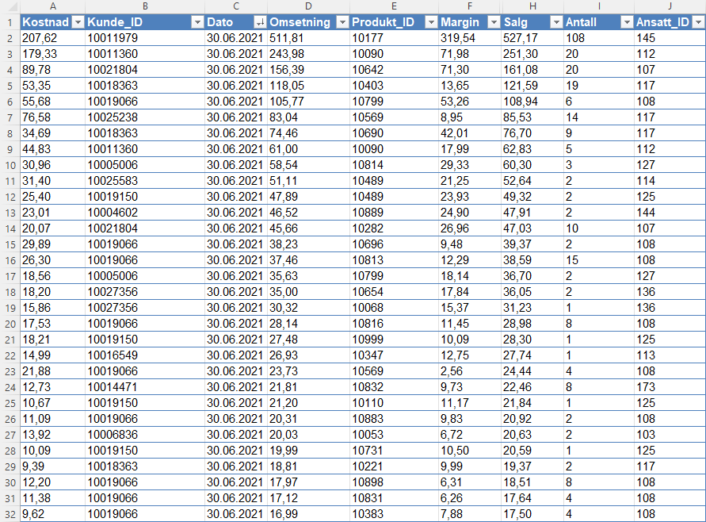
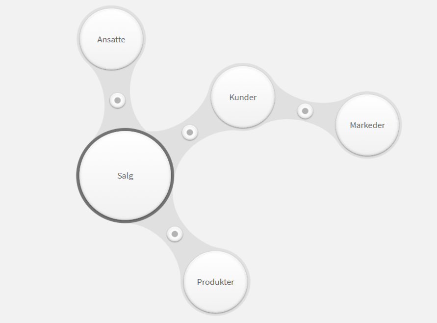

Project: Icecold
Introduction
One of the leading business intelligence solutions on the Norwegian market is Qlik Sense, a software developed by Swedish Qlik. To test it out, I "started" a virtual mobile ice cream company that supplies businesses and residential areas with ice cream and other frozen products. I set up this data in 5 Excel-tables with data on sales, products, customers, employees and markets (geographic areas). I loaded this data into Qlik Sense, which automatically linked the tables together.
 Dashboard
To visualize the data, I created a simple one-page dashboard. I placed all the filters on the left side to simplify filtering the charts by period, geographical area or team/employee. This dashboard contains KPIs on sales, costs, profits, number of transactions and average sales value. I also created pie/doughnut charts to visualize the various product categories and bar charts to visualize the largest products and (corporate) customers measured in sales. I set up a distribution chart of sales per product divided into final product categories (product category 3) to show the spread in sales. I also included a map function that shows where the company operates, namely the southeastern part of Norway. Finally, I created a line chart to visualize sales over the entire period (Q1 2019 to Q6 2021). This shows clear peaks during the summer months and no data in the months November-February, which is self-explanatory.
Conclusion
Mitt inntrykk av Qlik Sense er at det er et forståelig og fleksibelt verktøy som er enkelt å ta i bruk. Bruken av measures er enkelt og rett fram og jeg liker at det finnes en søkknapp for raskt å finne spesifikk data. Sammenlignet med Power Bi er det veldig brukervennlig, ettersom Power BI krever en viss brukerkunnskap av Microsoft-verktøy, spesielt Excel. Mulighetene i Power BI fikk jeg inntrykk av at er litt flere enn i Qlik Sense, spesielt når det gjelder estetikk. Men alt i alt virker dette som et aldeles bra BI-verktøy. My impression of Qlik Sense is that it is a flexible tool which is easy to understand and use. The use of measures is simple and straight forward and I like that there is a search button to quickly find specific data. Compared to Power BI, it is very user-friendly, as Power BI requires some prior knowledge to Microsoft tools, especially Excel. I got the impression however that Power BI gives the user somewhat more possibilities, especially when it comes to aesthetics, but all in all, this seems like a good BI-tool.